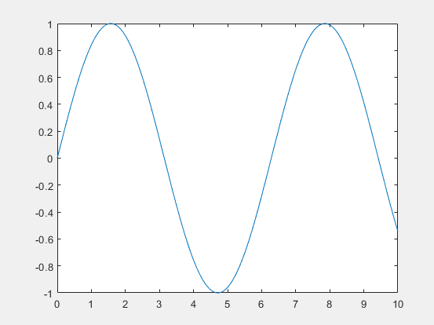

MATLAB - Graphs
MATLAB has the tools to plot all different forms of graphs. When executing a script that contains code to generate a graph, it will load into a separate window and not the command window. From here the graph can be edited, such as adding keys and changing the scale, and provides the ability to export the graph. There are many graphs you can create, 2d and 3d, as well as designing them to fit you needs.
Line Plot
A simple y = x2 graph can be denoted with the following script:
x = [0:5:100]; y = x; plot(x, y)
This graph has a range of x values from 0 to 100, with an increment of 5. This will produce the following graph:
Sin, Cos & Tan
Typical mathematical notations associated with graphs can be used in MATLAB such as sin. The function sin() is used to generate sin graphs.
x = [0:0.01:10]; y = sin(x); plot(x, y), grid on, axis equal
This will produce a simple sin graph.

Customising
There are several functions that can be used to make you graphs look more presentable.
-
The xlabel and ylabel functions generate labels along the respective axis.
-
The grid on function puts grid lines on the graph.
-
The axis equal function generates the plot with the same scale factors and the spaces on both axes.
The title function puts a title on the graph.
Below is the same sin graph as before with several of these functions used. The axis equal function makes the biggest difference here, producing a more standard looking sin graph.
x = [0:0.01:10];
y = sin(x);
plot(x, y), xlabel('x'), ylabel('Sin(x)'), title('Sin(x) Graph'), grid on, axis equal
3D Graphs
Using the meshgrid() and surf() functions, you can create 3D graphs.
[x,y] = meshgrid(-2:.2:2); z = x .* exp(-x.^2 - y.^2); surf(x, y, z)